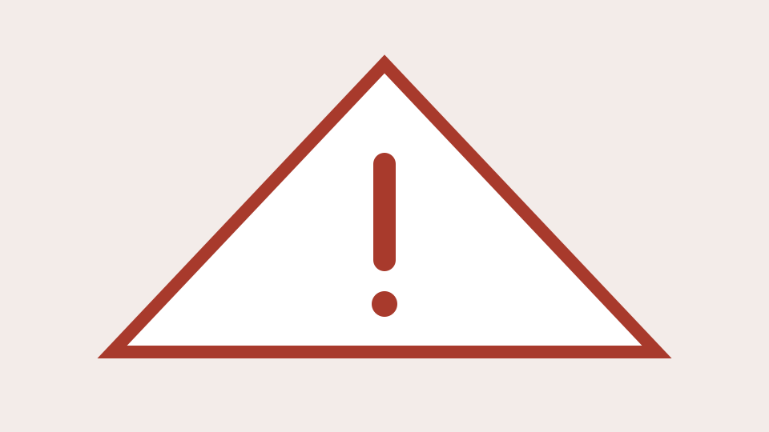
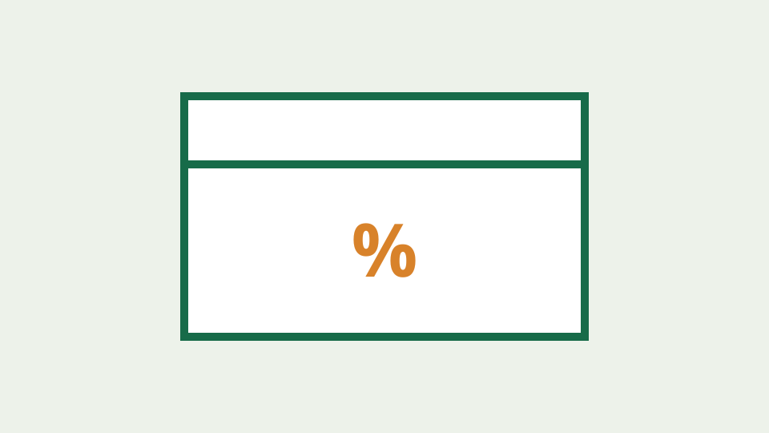
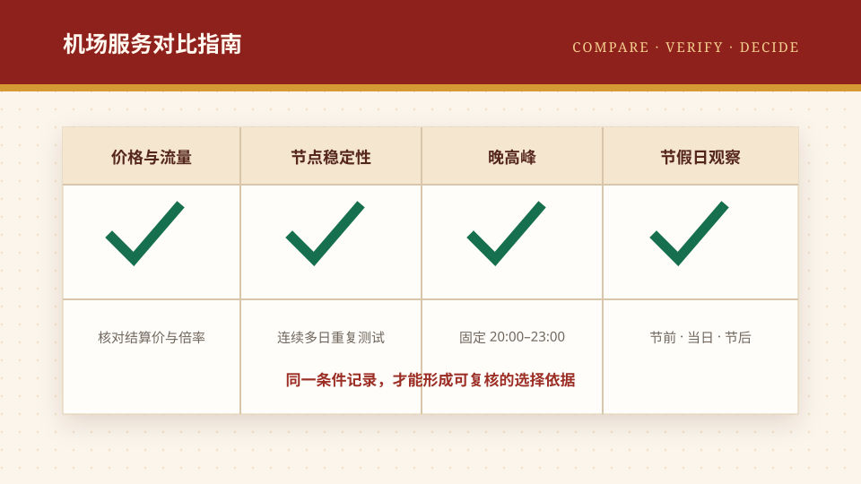

2026 网络代理客户端全面横评与迁移指南：Surge、Shadowrocket、Clash Verge Rev 与 Mihomo Party 终极对决
跨越 iOS、macOS、Windows 与 Android 四大平台，全方位横向评测 2026 主流网络代理客户端生态，详解内核支持、内存占用、脚本自动化、Tun 模式与新手平滑迁移手册。
按文章标题、摘要与标签筛选。全部内容在关闭 JavaScript 时仍可浏览。
跨越 iOS、macOS、Windows 与 Android 四大平台，全方位横向评测 2026 主流网络代理客户端生态，详解内核支持、内存占用、脚本自动化、Tun 模式与新手平滑迁移手册。
专为高校科研师生、软件开发者与外贸工程师定制的 2026 网络生产力指南，详解 Git 命令行代理、Docker 镜像拉取超时、学术文献免人机验证与远程 SSH 会话保活实操。
面向 2026 跨境电商卖家（Amazon、TikTok Shop、Shopify、Shopee），深度剖析多账号关联封禁的网络层与环境层诱因，详解独立静态住宅代理配置、指纹浏览器隔离与合规网络架构。

深度剖析 2026 年机场服务商后台自动化审计系统，详解家庭多设备与好友合租场景下的并发连接超限、跨地区 IP 漂移封号机理及安全共享防护守则。
深度剖析中国电信（163/CN2）、中国联通（169/9929）与中国移动（CMI）国际出口网络拓扑，解析为什么相同机场在不同宽带下速度天差地别，提供针对不同运营商的最佳选线策略。
深入剖析 2026 年两大抗审查与弱网加速核心协议——基于 QUIC/UDP 的 Hysteria 2 与基于真实 TLS 伪装的 VLESS-Reality，实测晚高峰高丢包环境下的吞吐与延迟表现。
2026 年最新家庭与工作室全屋透明网络加速完全教程，深度对比 OpenClash、PassWall 与 HomeProxy，详解主路由/旁路由拓扑组网、DNS 分流防污染与游戏主机加速实操。
深度解构 2026 年生成式人工智能（ChatGPT、Claude 3.5、Midjourney）风控风暴背后的 IP 欺诈评分机制，详解双 ISP 原生住宅 IP、机房广播 IP 差异及生产力防封准则。
全面剖析 2026 年新一代通用网络代理内核 Sing-box，从 iOS、Android、Windows 与 macOS 客户端选型，详解 JSON 规则配置、Tun 虚拟网卡接管与故障排查。
深入剖析 2026 最新流媒体风控阻断逻辑，详解 Netflix 自制剧锁区与完整库差异、Disney+ Error 73 报错机理，以及如何通过住宅原生 IP 与大带宽专线实现 YouTube 8K 秒开。
2026 年最新机场推荐与选购深度指南，全面剖析 IEPL/IPLC 专线与普通中转差异，详解晚高峰测速、流量倍率陷阱与防跑路资金风控策略。
全面梳理 2026 年主流梯子与网络代理工具，深入对比 Shadowrocket、Clash 与 Sing-box 客户端生态，剖析 Trojan、VLESS 与 Hysteria2 协议演进及合规安全防护原则。
全面解答一元机场、免费机场、赔钱机场、小火箭 (Shadowrocket) 订阅配置、晚高峰卡顿、优惠码与账号安全等 30 篇高频疑难。
解释服务失联和“跑路机场”搜索词背后的常见风险信号，提供基于公开事实的记录、核验与损失控制方法。

结合福利中心已整理的机场优惠码，说明如何核对适用套餐、折后总价、续费价格、退款限制和活动真实性。
用中性语言解释套餐周期、延迟、吞吐、丢包、服务等级与工单等常见术语，帮助新手读懂产品页面。
说明测评文章应如何记录环境、时间、样本与限制，避免把单次速度或个人感受写成服务长期表现。

按照机场推荐榜顺序，对比 16 项候选服务的公开价格、套餐结构、优惠信息与证据状态，并说明节点稳定性、晚高峰和节假日表现应如何持续测试。
一份不依赖具体品牌的新手选择框架，从需求、预算、服务条款、支持渠道和退出成本五个方面缩小候选范围。